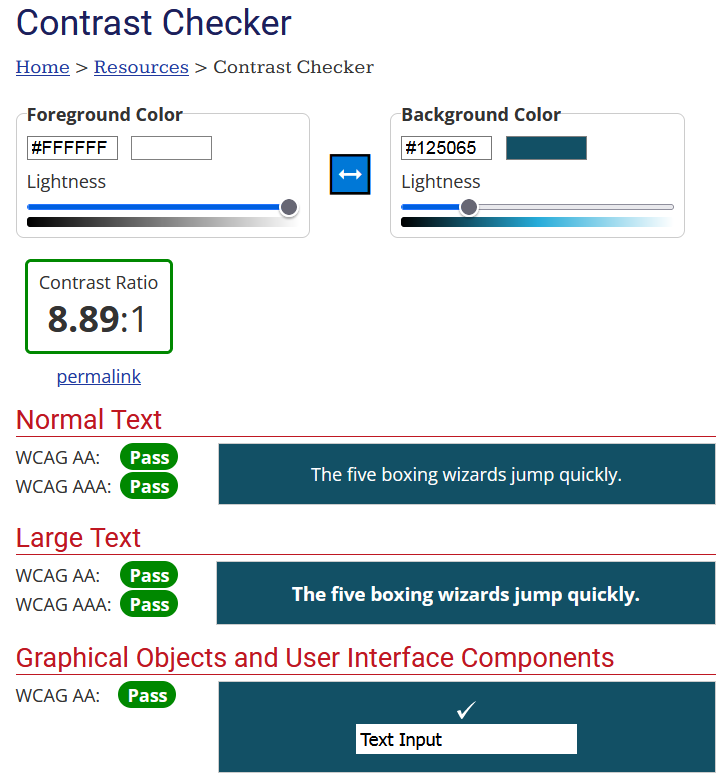
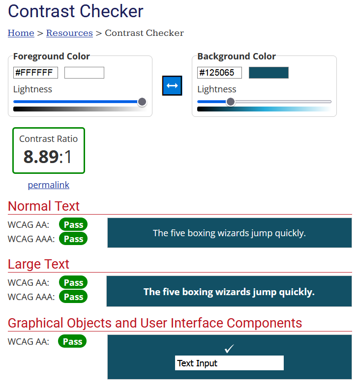

Acerca de este proyecto
Esto es un proyecto desarrollado para el bootcamp Desarrollo Web Full Stack + Tecnologías inmersivas.
El propósito de esta web es aprender a consumir una API externa para obtener su información y exponerla en tarjetas. Para ello, se ha utilizado
la API REST Countries. (https://restcountries.com/)
La idea era recoger la información de la API y mas tarde traer datos propios obtenidos de un JSON, que finalmente ha sido implementado para hacer el pequeño minijuego del quiz.
La idea era recoger la información de la API y mas tarde traer datos propios obtenidos de un JSON, que finalmente ha sido implementado para hacer el pequeño minijuego del quiz.
He realizado el prototipado con el programa Balsamiq Mockups. Este programa nos permite hacer prototipados rápidos con las páginas que tenemos que incluir en el proyecto.
El diseño final se ha realizado con Figma. Esto permitió definir los aspectos y estilos finales, así como desarrollar el manual de estilo.
Respecto a los objetivos concretos son los de la siguiente tabla, siendo obligatorios los blancos y extras los azules. Del conjunto de objetivos se ha llegado al cumplimiento con éxito la mayoría del total de objetivos en el tiempo establecido.
| Requisito | Cumplimiento |
|---|---|
| Desarrollar una página web con HTML, CSS, Javascript | Cumplido |
| Consumir una API externa | Cumplido |
| Mostrar los datos en tarjetas, tablas, etc | Cumplido |
| Subir a Github y que esté documentado con su respectivo README | Cumplido |
| Utilizar Bootstrap o SASS | Cumplido |
| Los resultados se paginan | Cumplido |
| Ver el detalle de un solo elemento | Cumplido |
| Filtrar la información traída por la API | Cumplido |
| Hacer Deploy en Github | Cumplido |
| Consumir N APIs | No cumplido |
| Crear un JSON y consumir la información | Cumplido |
| Validar con alguna función de Javascript el funcionamiento de la página (test) | No cumplido |
La organización para la realización de las tareas ha sido mediante el sistema Kanban y en concreto, con la aplicación de Trello. He dividido el tiempo en pequeños sprints de 3 o 4 dias aproximadamente cada uno de ellos.
Se han marcando los objetivos especificados en el briefing de Simplon del Producto Minimo Viable con el mayor grado de importancia marcados en color rojo y el resto de objetivos adicionales en amarillo. esto ha permitido centrarse en las tareas mas importantes.
Además otros objetivos auto impuestos como crear el minijuego, las condiciones de accesibilidad y sostenibilidad, o la creación de la presentación en esta misma sección fueron marcados en azul para distinguirse bien del resto de objetivos obiligatrios. Por ultimo se han puesto un fondo verde
a las tareas ya realizadas para identificar lo que estaba al 100% terminado.
Un ejemplo de la organización llevada en una de las etapas:
Un ejemplo de la organización llevada en una de las etapas:
Durante el desarrollo del proyecto estas han sido las herramientas utilizadas:
| Herramienta | Uso |
|---|---|
| Trello | Gestión de proyectos y seguimiento de tareas |
| Balsamiq Mockups | Prototipado inicial |
| Figma | Diseño de interfaces y estilos |
| Photoshop | Diseño y retoque de imágenes |
| Illustrator | Retoque de imágenes SVG |
| Visual Studio Code | Entorno de desarrollo |
| Bootstrap 5 | Framework de CSS para diseño responsivo |
| HTML5 | Estructura y contenido de la web |
| CSS3 | Estilos visuales |
| JavaScript | Lógica y funcionalidades de la aplicación |
Para cumplir con los estándares de la W3C, se han pasado los siguientes validadores y cuya información ha servido para modificar la web en consonacia y de esta manera alcanzar un mayor
grado de accesibilidad y rendimiento:
Validador de la W3C (https://validator.w3.org/)
Validador Tawdis https://www.tawdis.net/
Lighthouse (Inspector de elementos)
Validador de contraste https://webaim.org/resources/contrastchecker/

Aunque en alguno nos marca algun problema menor, podemos comprobar que la web se adapta perfectamente en su mayoría a los estándares AA determinados por la W3C para la categoría AA.
Validador de la W3C (https://validator.w3.org/)
Validador Tawdis https://www.tawdis.net/
Lighthouse (Inspector de elementos)
Validador de contraste https://webaim.org/resources/contrastchecker/

Aunque en alguno nos marca algun problema menor, podemos comprobar que la web se adapta perfectamente en su mayoría a los estándares AA determinados por la W3C para la categoría AA.
Como no podía ser de otra manera, hemos hecho uso de las llamadas 'Green Skills' y se han usado varias de las técnicas de sostenibilidad en el código posibles para tener una web mas sostenible, como varias
calculadoras de carbono y de impacto ambiental, después se han implementado las siguientes intervenciones al código:
Desupués de estas implementaciones se han vuelto a utilizar las calculadoras de huella de carbono, arrojando buenos resultados a cuanto a sostenibilidad:
- Optimización de imágenes: Se ha reducido y optimizado la compresión de las imágenes utilizadas para que sea mas eficiente. Además se ha procurado en todo lo posible utilizar imágenes .SVG vectoriales para que la carga de información sea menor. Esto nos permite mayor rapidez en su carga y a la vez consumir menos recursos energéticos.
- Optimización de código: Se ha procurado implementar un código eficiente evitando duplicidades en el mismo mediante la modularización y reutilización de funciones y componentes. Esto ha permitido optimizar el rendimiento del sitio web al reducir la cantidad de código repetitivo, mejorando la mantenibilidad y facilitando futuras actualizaciones y modificaciones de manera más ágil y eficaz.
- Diseño responsive: La implementación de un sistema responsivo no solo asegura una experiencia consistente para los usuarios en diferentes dispositivos, sino que también contribuye a la eficiencia energética y la sostenibilidad. Al adaptarse de forma óptima a distintos tamaños de pantalla, nuestra web reduce la carga en los dispositivos móviles y equipos de escritorio, optimizando así el consumo de energía de los usuarios. Esta eficiencia energética no solo mejora la experiencia del usuario al reducir el consumo de recursos de sus dispositivos, sino que también refleja el compromiso con la sostenibilidad al minimizar el impacto ambiental asociado al uso excesivo de energía en la navegación web.
Desupués de estas implementaciones se han vuelto a utilizar las calculadoras de huella de carbono, arrojando buenos resultados a cuanto a sostenibilidad:
-
Website Carbon Calculator (https://www.websitecarbon.com/)
Digital Beacon (https://digitalbeacon.co/)
Green Pixie (https://digitalbeacon.co/)
Creado por [JREdesign] (https://github.com/JREdesign)
Proyecto: https://github.com/JREdesign/InforNation
Proyecto: https://github.com/JREdesign/InforNation